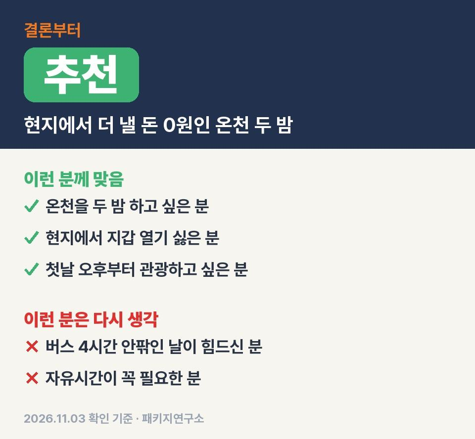
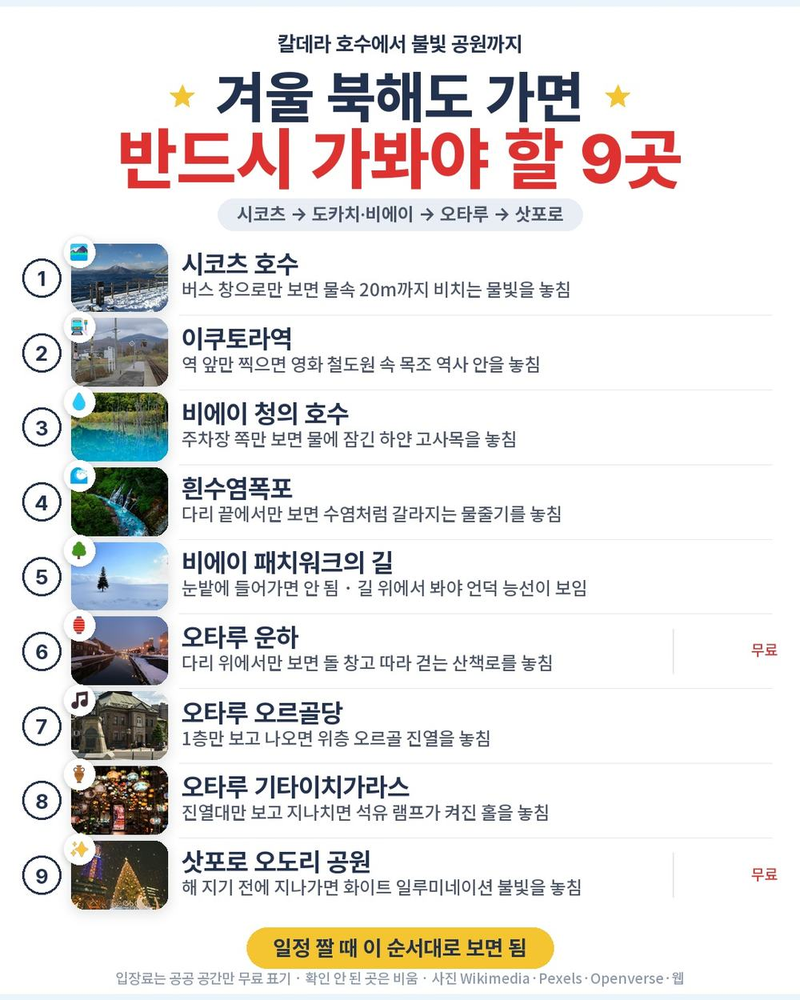
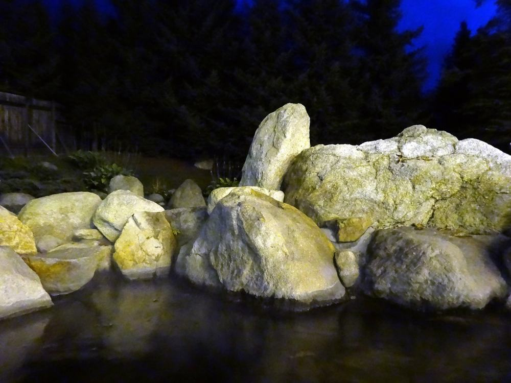
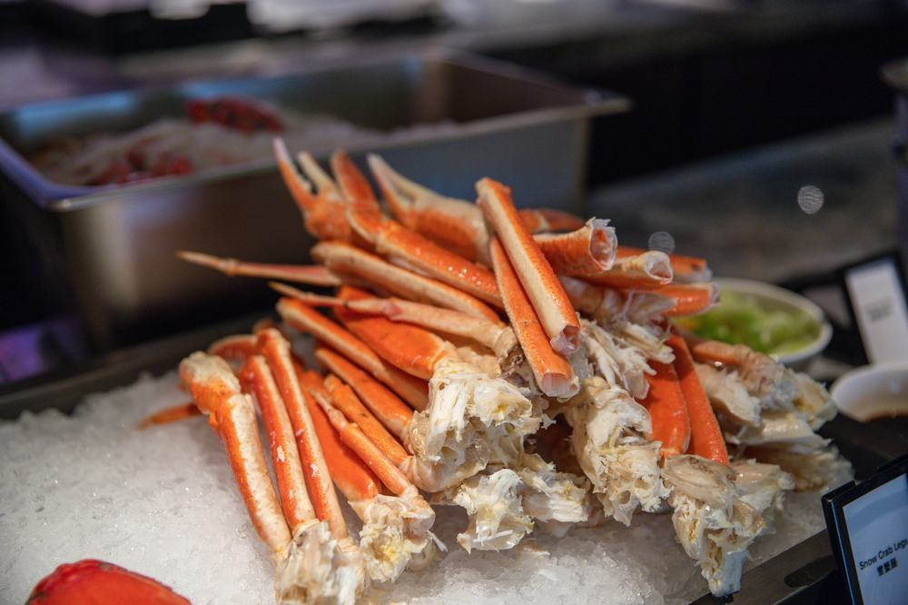
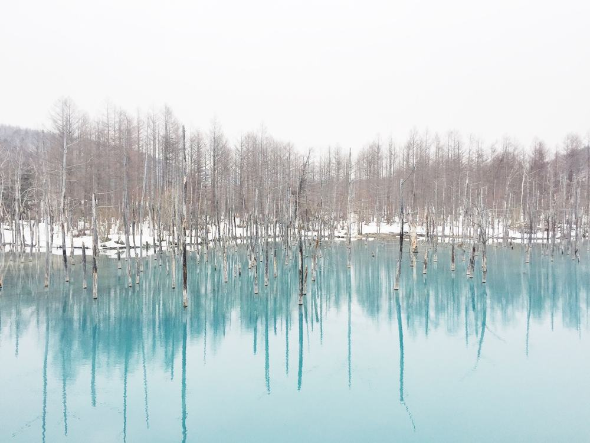
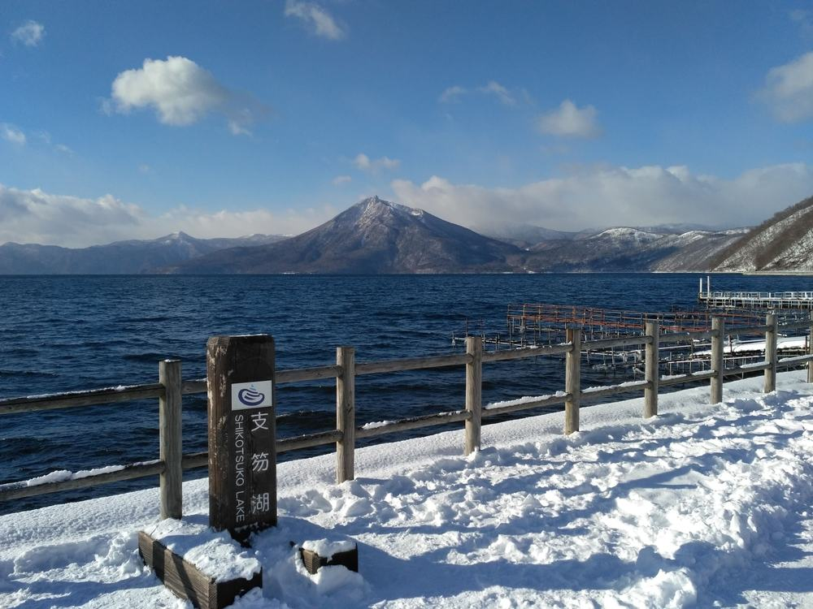

북해도 패키지 여행 3박 4일 참좋은여행 114만 9천원, 현지에서 더 낼 돈 0원인 온천 두 밤
북해도 패키지는 보통 가이드 경비를 현지에서 따로 걷는데 이 상품은 4천엔 경비와 팁이 상품가 안에 들어가 있음.
직접 다녀온 후기가 아니라, 참좋은여행 일정표와 포함·불포함 원문을 한 줄씩 따져 본 글임.
결론 — 추천. 온천 호텔 두 밤, 식사 8회, 게 뷔페 60분 주류 무제한, 경비·팁까지 값 안에 있음. 다만 버스 4시간 안팎인 날이 힘드신 분은 맞지 않음.

같은 목적지 패키지 오늘 값 나란히 비교
https://package-researcher.github.io/d/hokkaido.html?s=art

| 항목 | 내용 |
|---|---|
| 가격 | 1인 1,149,000원 (성인 · 12월 출발 기준) · 2인 2,298,000원 |
| 여행사 | 참좋은여행 |
| 항공 | 이스타항공 직항 (ZE625·ZE626) · 인천 09:10 → 치토세 11:40 / 치토세 13:00 → 인천 16:00 |
| 숙소 | 도카치가와 온천 다이헤이겐 → 아트 호텔 아사히카와 → 도미인 치토세 (2인 1실) |
| 일정 | 3박 4일 · 버스 · 한국어 가이드 · 식사 8회 · 쇼핑 1회 · 가이드·기사 경비 4천엔·팁 포함 |
▶ 내 출발일 오늘 기준 요금 확인 (제휴 링크 · 예약 시 수수료를 받으며 가격은 같습니다)
▶ 11월 3일 기준 북해도 패키지 최저 99만 9천원부터 — 출발일별 값 한 화면에: 비교 페이지
| 번호 | 내용 | 한 줄 답 |
|---|---|---|
| 1 | 이 값에 들어 있는 것 | 관광 14곳 |
| 2 | 현장에서 더 낼 돈 | 필수 0원 |
| 3 | 일정과 체력 | 버스 약 10시간 30분 |
| 4 | 자유여행으로 짜면 | 1인 약 115만원 |
| 5 | 맞는 분 · 안 맞는 분 | 3 대 3 |
1. 이 값에 들어 있는 것

114만 9천원에 든 걸 세 보면 꽤 길어짐.
이스타항공 직항 왕복, 호텔 세 밤, 식사 8회, 관광지 입장료, 여행자보험, 한국어 가이드, 버스.
숙소가 이 상품의 얼굴임. 첫 밤은 도카치가와 온천 다이헤이겐인데 여기 물이 모르온천. 둘째 밤은 아트 호텔 아사히카와 트윈룸, 셋째 밤은 2026년 6월에 연 도미인 치토세라 천연 온천 대욕장이 있음.
온천에서 자는 밤이 둘이고 둘 다 버스가 긴 날 밤이라 피로를 그날 바로 풂.
먹는 쪽은 3일차 저녁이 핵심. 게 다리에 소·돼지 샤브샤브, 맥주·하이볼·사케 같은 술까지 60분 무제한임. 그 밖에 카이센동+우동, 스프카레, 함바그 정식이 들어가 있음.
덤도 몇 개 있음. 마유 크림 한 사람 하나, 110V 어댑터 한 사람 하나, 2일차 자유 저녁에 쓰는 1,000엔.
2. 현장에서 더 낼 돈

| 항목 | 금액 | 필수/선택 | 비고 |
|---|---|---|---|
| 가이드·기사 경비 | 0원 | 포함 | 1인 4천엔 상품가에 포함 |
| 팁 | 0원 | 포함 | 상품가에 포함 |
| 선택관광 | 0원 | 없음 | 일정에 선택관광 없음 |
| 2일차 이온몰 저녁 | 지원금 넘는 만큼 | 해당 시 | 1인 1,000엔 지원 |
| 4일차 공항 점심 | 각자 | 해당 시 | 13:00 비행기라 일정에 점심 없음 |
| 합계 (2인 필수분) | 0원 | 싱글룸 쓰면 30만원 추가 |
두 분 기준으로 꼭 더 나가는 돈이 없어서 2인 229만 8천원이 거의 그대로 총액임.
가이드 경비를 엔화로 따로 챙길 일이 없다는 게 생각보다 편함.
반드시 더 내는 돈이 0원이라, 상품가가 곧 예산임.
3. 일정과 체력

| 일차 | 가는 곳 | 버스 | 걷기 | 점심 · 저녁 |
|---|---|---|---|---|
| DAY 1 | 치토세 11:40 도착 → 시코츠 호수 → 도카치가와 온천 | 약 3시간 45분 | 적음 | 현지식 · 호텔식 |
| DAY 2 | 류게츠 → 자작나무 길 → 이쿠토라역 → 캄파나 롯카테이 → 청의 호수 → 흰수염폭포 → 패치워크의 길 → 아사히카와 | 약 2시간 30분 | 보통 | 현지식 · 이온몰 자유식 |
| DAY 3 | 오타루 운하·오르골당·기타이치가라스·디저트 거리 → 오도리 공원 → 게 뷔페 → 치토세 | 약 4시간 5분 | 보통 | 현지식 · 게 뷔페 |
| DAY 4 | 호텔 조식 → 치토세 공항 13:00 → 인천 16:00 | 약 10분 | 적음 | 없음 · 없음 |
버스는 사흘 합쳐 약 10시간 반. 1일차는 공항에서 도카치가와까지, 3일차는 아사히카와에서 오타루까지가 길음.
겨울 북해도라 걷는 길이 눈길임. 원문 준비물에도 미끄럽지 않은 신발이 필수로 적혀 있음. 청의 호수·흰수염폭포 쪽은 빙판일 수 있으니 방한화가 편함.
버스가 긴 1일차·3일차 밤이 마침 온천 호텔이라, 동선이 체력 쪽으로는 잘 짜인 편임.
이 상품 조건 한눈에 (출발일 달력·두 분 값·비슷한 상품과 비교)
https://pkg-lab.com/pkg/JPP026_HD/?utm_source=ghpages&utm_medium=post&utm_campaign=daily
같은 목적지 다른 여행사 패키지, 쇼핑·선택관광·가이드 경비까지 비교
https://pkg-lab.com/dest/SPK/m/2026-12/?utm_source=ghpages&utm_medium=post&utm_campaign=daily
4. 자유여행으로 짜면

| 항목 | 금액 | 근거 |
|---|---|---|
| 인천–치토세 왕복 항공 | 437,530원 | ICN↔CTS 직항 왕복 1인 (패키지와 같은 출발일 · 2026-11-03 마이리얼트립 조회) |
| 호텔 3박 | 390,000원 | 온천 료칸 석식 포함 1박 + 시내 호텔 2박, 2인 1실 1인분 (추정) |
| 식사 (5회 · 게 뷔페 포함) | 150,000원 | 호텔 조·석식 외 끼니 (추정) |
| 렌터카·기름 3일 | 150,000원 | 2인 나눠 1인분 · 겨울 타이어 (추정) |
| 공항 이동 | 10,000원 | 렌터카 반납 기준 (추정) |
| 여행자보험 · 유심 | 15,000원 | 4일 기준 (추정) |
| 가이드 | — | 자유여행은 없음 |
| 합계 | 약 1,152,530원 |
직접 짜면 1인 약 115만원, 패키지는 114만 9천원. 값만 보면 거의 같음.
근데 직접 짜면 눈길을 렌터카로 사흘 운전해야 함. 시코츠에서 도카치, 아사히카와에서 오타루가 다 겨울 산길이라 운전 부담이 꽤 큼.
값이 비슷하면 겨울 운전을 안 하는 쪽이 이득이라, 처음 가는 겨울 북해도면 패키지 쪽이 편함.
5. 맞는 분 · 안 맞는 분

| 맞는 분 | 안 맞는 분 |
|---|---|
| 온천을 두 밤 하고 싶은 분 | 버스 4시간 안팎인 날이 힘드신 분 |
| 현지에서 지갑 열기 싫은 분 | 자유시간이 꼭 필요한 분 |
| 첫날 오후부터 관광하고 싶은 분 | 쇼핑센터 방문 자체가 싫으신 분 |
안 맞는 쪽도 길은 있음. 버스가 긴 날 밤은 둘 다 온천이고 쇼핑은 면세점 한 곳 40분이 전부. 오타루에선 운하와 디저트 거리를 걸어서 둘러봄.
걸리는 건 이동 시간 쪽이고 값에 든 내용은 빠지는 데가 없음.
자주 묻는 질문
Q. 북해도 패키지 가격은 이 상품이 얼마인가요?
A. 12월 출발 기준 1인 114만 9천원, 2인 229만 8천원. 출발일마다 값이 다르니 날짜별로 봐야 함.
Q. 북해도 패키지 가이드 경비는 따로 내나요?
A. 이 상품은 안 냄. 가이드·기사 경비 1인 4천엔과 팁이 상품가에 들어 있음.
Q. 북해도 패키지 쇼핑은 몇 번 가나요?
A. 1번. 현지 시내면세점에 40분 들름. 선택관광은 일정에 없음.
마무리
경비·팁이 값 안에 있어서 현지 계산이 깔끔한 겨울 북해도 상품.
온천 두 밤이 긴 버스 날과 맞물려 있어서 부모님 모시고 가도 동선이 덜 고됨.
출발일에 따라 값이 달라서 가시려는 날짜 요금부터 확인하시면 됨.
같은 목적지 패키지 오늘 값 나란히 비교
https://package-researcher.github.io/d/hokkaido.html?s=art
이 글에는 네이버 제휴 링크가 포함되어 있으며, 링크를 통해 예약하시면 일정 수수료를 받습니다. 가격은 동일합니다. 가격과 구성은 2026년 11월 3일 확인 기준이며 출발일에 따라 달라질 수 있습니다.
▶ 이 상품, 영상으로 보기 (유튜브)
▶ 북해도 패키지 오늘 값 나란히 비교
▶ 같은 목적지 다른 여행사 패키지, 쇼핑·선택관광·가이드 경비까지 비교: pkg-lab.com